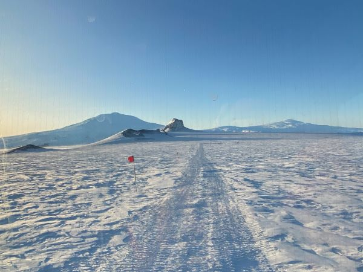

Antarctica Quiz

What do you know about the frozen continent?
- What is the largest US National Science Foundation base in Antarctica?
- A. South Pole Station at the South Pole
- B. Palmer Station on the Antarctic Peninsula
- C. McMurdo Station on Ross Island
- D. WAIS Divide on the West Antarctica Ice Sheet
- During the Austral summer, how many people can be at the largest US base in Antarctica?
- A. 75-100
- B. 200-300
- C. 500-700
- D. 800-1000
- What type of penguin is pictured below?

- A. Adele
- B. Chinstrap
- C. Gentoo
- D. Emperor
- Why do people go to Antarctica?
- A. To study science
- B. To make money
- C. To have an adventure
- D. Because, why not?
Go to answers